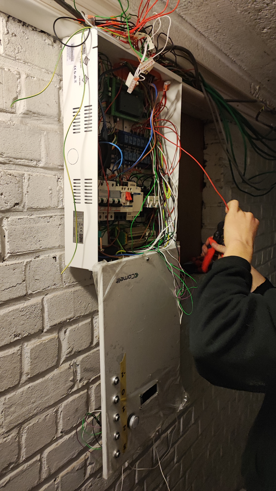
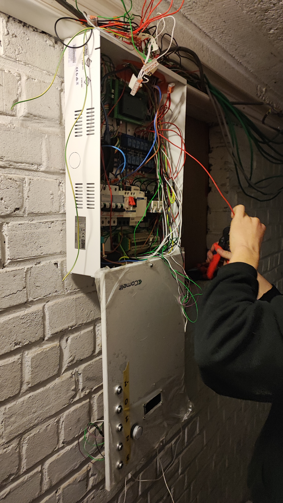

Introductie
gedurende een lange tijd is de goederenlift van ons appartement te Schaarbeek defect.
Het gaat hier om een oude goederenlift uit de jaren 60 die nog mannueel via een touw en katrol bediend moest worden.
We vonden dit een goed moment voor vernieuwing maar vonden de kost om dit te laten doen veel te duur.
Hiervoor zou de volledige constructie moeten vernieuwd worden. Alsook zou het volledig om maat gemaakt moeten worden door de smalle schacht.
We hebben dus gekozen om het zelf te doen. Hierdoor kan de huidige rail en cabine blijven bestaan. We hebben er een motor opgezet met een schakelaar.
Daarmee konden we de lift al omhoog en omlaag laten gaan zolang we de knop blijven indrukken.
Concept
Het is de bedoeling dat de huurders met een enkele druk op een knop de lift naar het juiste verdiep te verplaatsen.
De aansturing zal dan eerst alle veiligheden nakijken alvorens de lift te laten vertrekken.
Eens de lift in beweging is kan er geen ander verzoek ingediend worden.
De lift moet ook op het juiste verdiep vanzelf tot stilstand komen.
Alsook moet de deur bij aankomst van de lift ontgrendeld worden.
We hebben besloten om bij de opstart van de arduino sowieso een autohome laten uitvoeren.
Bij de opstart kan je 2 contacten kortsluiten om de lift in debug modus te zetten. Hierbij krijg je de laatste 10 errorcodes te zijn. (deze zijn opgeslagen in het EEPROM geheugen)
werking
Elk verdiep krijgt 2 drukknoppen. Eén om de lift naar het verdiep van oproep te sturen en één om de lift naar de kelder te sturen.
In de kelder staat er een drukknop voor elk verdiep. De kelder is het enige verdiep die een lcd scherm heeft. Hier komen enkele gegevens op zoals:
- huidig verdiep
- bestemming van de lift
- een melding dat de lift in beweging is
- error codes indien nodig.
- geeft aan wanneer er een autohome bezig is
- elke stap van de opstart clyclus
De volledige lift word bediend door een arduino mega. Aangezien deze werkt op 5 volt hebben we enkele tussencomponenten nodig om naar 24V te gaan.
Dit is nodig door het verlies op de lengte van de kabels in de liftschacht. Voor de inputs maken we gebruik van optocouplers en voor de outputs relais.
Voor het aansturen van de motor gebruiken we een swaardere relais dan de rest alsook een motorbeveiliging.
 
